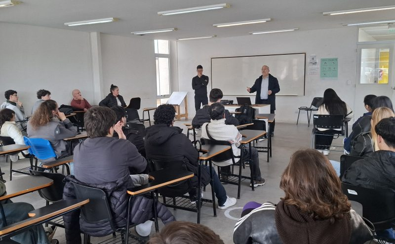

Sobre nosotros
Nuestra historia
El Instituto de Formación Profesional San Isidro nació en 2006 a partir del sueño de una familia de deportistas que, después de años de dedicación y experiencia en el ámbito deportivo, descubrió una profunda vocación por la enseñanza y la formación de nuevas generaciones.
Con el paso de los años, aquella vocación se transformó en un proyecto educativo orientado a transmitir conocimientos, experiencias y valores relacionados con el deporte, la actividad física y el bienestar. Así nació IFPSI, una institución que busca acompañar a las personas interesadas en desarrollar sus habilidades y construir nuevas oportunidades profesionales.
A lo largo de su trayectoria, el instituto fue ampliando sus propuestas de formación para responder a los intereses y objetivos de sus estudiantes. Durante este recorrido, mantuvo como pilares fundamentales el respeto, la responsabilidad, la perseverancia y el compromiso con el aprendizaje.
Hoy, IFPSI continúa creciendo con el propósito de mantener vivo el espíritu con el que fue creado: compartir conocimientos, fomentar hábitos saludables y contribuir a la formación de profesionales preparados para desenvolverse con responsabilidad en su ámbito de trabajo.
Nuestra misión
Nuestra misión es brindar una formación profesional de calidad vinculada con la actividad física, el deporte y el bienestar, ofreciendo herramientas teóricas y prácticas que acompañen el desarrollo personal y profesional de cada estudiante.
Buscamos promover una educación que combine conocimientos técnicos, responsabilidad y una comprensión integral de la importancia del movimiento y los hábitos saludables. Consideramos que la formación no consiste solamente en aprender procedimientos, sino también en comprender cuándo y cómo aplicarlos de manera adecuada.
Además, aspiramos a que nuestros estudiantes desarrollen confianza en sus capacidades, autonomía para continuar aprendiendo y una actitud comprometida con las personas con las que trabajarán en el futuro.
Nuestro compromiso con los estudiantes
En IFPSI reconocemos que cada estudiante tiene sus propios objetivos, experiencias y tiempos de aprendizaje. Por eso, buscamos ofrecer un entorno educativo respetuoso y motivador, en el que cada persona pueda adquirir conocimientos, fortalecer sus habilidades y avanzar en su formación.
Nuestra propuesta educativa procura integrar contenidos teóricos con experiencias prácticas relacionadas con el ámbito deportivo y el bienestar. De esta manera, los estudiantes pueden relacionar lo aprendido con situaciones concretas y comprender mejor cómo aplicar sus conocimientos en el futuro profesional.
También valoramos la participación activa, el intercambio de ideas y el trabajo en equipo como herramientas que enriquecen el aprendizaje. Creemos que hacer preguntas, compartir experiencias y aprender de los demás son aspectos importantes para desarrollar nuevas capacidades.
Como institución, queremos acompañar a quienes eligen formarse con nosotros, alentando la constancia, la curiosidad y el aprendizaje continuo. Nuestro compromiso es seguir trabajando para que cada estudiante encuentre en IFPSI un espacio donde prepararse, crecer y construir nuevos proyectos.
